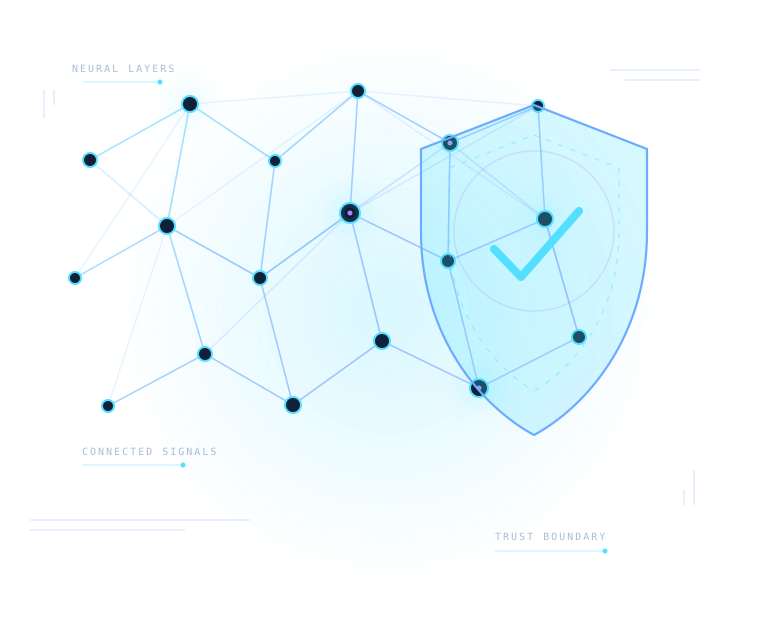

Core concepts, system types, capabilities, and limitations.
A new map for intelligent systems
Understand intelligence.Secure what it can do.
A structured learning atlas connecting Artificial Intelligence, practical model development, offensive security, and the emerging discipline of AI security.
Built for curious engineers, security practitioners, and AI researchers.

AI × SecurityOne connected knowledge map
04Learning parts
24Curriculum modules
24Planned modules
∞Room to explore
THE PLATFORM
A connected path through AI and security.
CipherNeuron is an independent learning platform designed to make a complex technical landscape easier to navigate. It connects the foundations of AI to practical development, then applies that understanding to cybersecurity and the assessment of AI systems themselves.
Rather than presenting isolated definitions, the curriculum organizes concepts into a progression. Each topic includes a concise Knowledge Card and a self-contained AI Learning Prompt that can be used with a preferred AI assistant.
KNOWLEDGE DOMAINS
What you will explore
Eight connected domains form the foundation of the learning map.
Learning paradigms, algorithms, datasets, and evaluation.
Neural networks, representation learning, and architectures.
Transformers, inference, prompting, and generative systems.
Python, model platforms, local inference, and applications.
Research and workflows across authorized security assessments.
Threat modeling and testing AI models, applications, and tools.
Adversarial evaluation, misuse testing, and operational methodology.
THE CURRICULUM
View the learning path Four parts. One progression.
Move from foundational understanding to building with AI, applying AI in security work, and assessing AI systems as security targets.
LEARNING METHODOLOGY
01
02
03
04
One topic. A focused lesson.
Each topic is a starting point for deeper study, not a substitute for it. Use its tailored prompt to generate a complete lesson in the AI assistant you prefer.
Choose a topic
Follow the curriculum sequence or search for a concept.
Review its Knowledge Card
Understand the definition, context, prerequisites, and objectives.
Copy the AI Learning Prompt
Use the full, topic-specific English prompt in your AI assistant.
Study, practice, and validate
Work through examples and exercises, then verify important claims.
LEARNING PROGRESSION
Build the right foundations first
Learn the concepts, models, data, and architectures.
Run models, develop applications, and experiment.
Improve authorized security workflows with AI assistance.
Assess AI-specific risks through testing and red teaming.
START WITH THE FOUNDATIONS
Learn how intelligence works before testing what it can do.
Begin with Artificial Intelligence Fundamentals and build toward practical development and advanced AI security assessment.
Start the curriculum